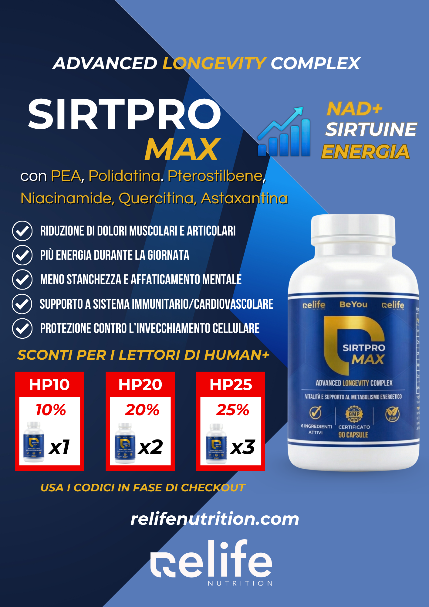
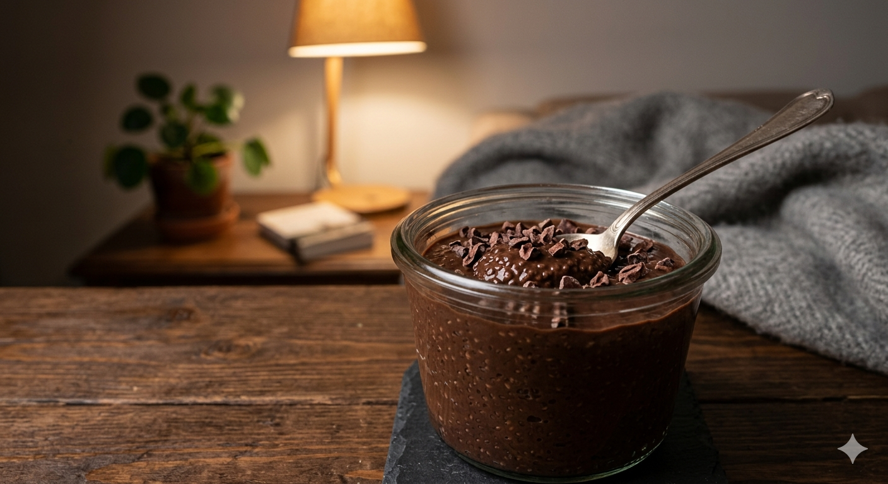
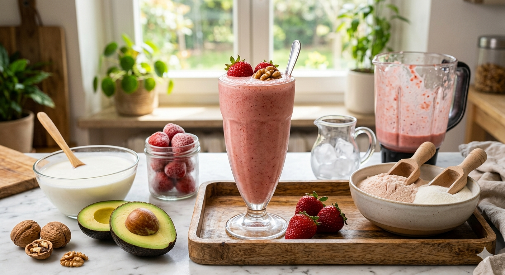
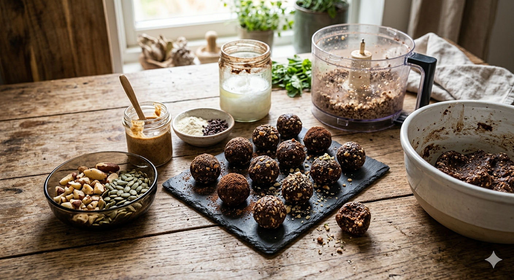

Dossier approfonditi su Energia, Salute & Nutrizione
Il manuale pratico per sbloccare il tuo metabolismo, spegnere l'infiammazione alla radice e riprogrammare il tuo sonno. All'interno: il nuovo Ricettario Funzionale.
Ormoni e Stress
Il "Pregnenolone Steal": scopri come l'ansia ruba i tuoi ormoni e blocca l'energia vitale.
Bio-Hacking Pratico
Il Protocollo PEA e gli abbinamenti naturali per tornare a dormire bene senza farmaci.
Nutrizione Intelligente
Ricettario Funzionale: 3 semplici elisir fai-da-te per ricaricare le tue cellule in pochi minuti.
Hai presente quando vai dal medico perché ti senti un involucro vuoto, fatichi a concentrarti e ti svegli già stanco? Fai le analisi del sangue di routine e lui ti liquida con un rassicurante e sorridente: "I parametri sono tutti nella norma, lei è solo un po' stressato". Ecco, questa è l'illusione più pericolosa della salute moderna.
La medicina tradizionale è uno strumento straordinario se ti rompi un braccio o prendi un'infezione grave. Ma quando si tratta di misurare la tua vera energia, l'equilibrio dei tuoi ormoni e la tua lucidità mentale, spesso il sistema fa fatica a darti risposte. Il motivo? Si ostina a guardare i classici "valori di laboratorio". Ma ti sei mai chiesto come vengono calcolati? Sono semplicemente la media di una popolazione che oggi è, per la maggior parte, in sovrappeso, infiammata e perennemente stanca. Essere "nella norma" oggi significa solo essere mediocri e nessuno vuole esserlo.
Siamo sazi, ma malnutriti
Oggi per fortuna non vediamo più malattie legate alla mancanza estrema di vitamine, come lo scorbuto. Ma vediamo qualcosa di molto più subdolo: una carenza cronica e silenziosa. Il panino "salutare" o la ricca insalata che mangi in pausa pranzo contengono fino al 60% in meno di vitamine rispetto a cinquant'anni fa. I terreni agricoli, sfruttati fino all'inverosimile, sono stati svuotati di minerali preziosi come zinco, magnesio e selenio.
Il tuo corpo fa delle scelte difficili
C'è un concetto affascinante chiamato "Triage Nutrizionale". Immagina il tuo corpo come il pronto soccorso di un ospedale pieno di emergenze: quando i nutrienti scarseggiano, il corpo deve decidere chi salvare. Usa quel poco magnesio che gli dai per le cose urgenti (come farti battere il cuore e tenerti in vita oggi), ma smette di inviarlo per le funzioni "a lungo termine", come la riparazione delle tue articolazioni o la produzione di molecole che ti fanno dormire bene. Non stai "semplicemente invecchiando". Stai esaurendo le scorte.
Marco Menichelli
CEO Relife Nutrition
In questo numero speciale metteremo in discussione i vecchi paradigmi. Ti daremo la mappa per capire le tue vere carenze, ti spiegheremo come spegnere i dolori alla radice (scoprirai una molecola chiamata PEA) e come rimettere in moto il tuo metabolismo per tornare a vivere al 100%. Mettiti comodo, si comincia.
Se mangi 3000 calorie di cibo ultra-processato (merendine, pane industriale, salse), il tuo corpo prende l'eccesso di energia e lo trasforma subito in grasso. Tuttavia, il tuo cervello continuerà a inviarti segnali di fame insaziabile. Per quale motivo? Perché il corpo sta rovistando nella spazzatura che gli dai da mangiare alla ricerca di Zinco, Magnesio, Vitamine B che ovviamente non troverà. Il segreto per dimagrire non è soffrire la fame, ma nutrire la cellula, non solo lo stomaco.
Hai ancora paura di mangiare cibi grassi? È una bugia degli anni '80 che ti sta spegnendo. Le vitamine chiamate "liposolubili" hanno bisogno dei grassi sani per viaggiare nel tuo corpo e venire assorbite. Le diete a bassissimo contenuto di grassi non solo ti rendono triste, ma abbassano drasticamente le tue difese immunitarie e la tua energia.
| Vitamina | Cosa fa davvero per te | I campanelli d'allarme (Sintomi) | Come integrarla bene |
|---|---|---|---|
| Vitamina A Non solo Carote | Rinforza i confini del tuo corpo (mucose di intestino e polmoni) e aiuta a produrre gli ormoni legati alla forza (come il testosterone). | Pelle ruvida "a grattugia" dietro le braccia, ci vedi male quando fa buio, prendi sempre il raffreddore. | Usa olio di fegato di merluzzo di buona qualità. Per molte persone, mangiare carote (beta-carotene) non basta perché il corpo fatica a convertirle in vera Vitamina A. |
| Vitamina D3 L'Ormone Maestro | Non è solo una vitamina per le ossa. È un vero e proprio ormone che comanda oltre 2000 geni e tiene a bada le malattie autoimmuni. | Umore a terra d'inverno, stanchezza cronica senza motivo, muscoli deboli e ossa che scricchiolano. | Prendila in gocce oleose (meglio se su base di olio d'oliva o cocco). Punta ad avere le analisi del sangue tra i 60 e gli 80 ng/mL. |
| Vitamina E Lo Scudo Anti-Ruggine | Fa da scudo alle tue cellule: impedisce ai grassi buoni del tuo corpo di "irrancidire" o arrugginirsi. Ottima per favorire la fertilità. | Memoria che perde colpi molto prima del tempo, crampi muscolari inspiegabili e problemi riproduttivi. | Le versioni da farmacia economiche (sintetiche) servono a poco. Cerca integratori chiamati "Full Spectrum", che contengono forme potenti chiamate Tocotrienoli. |
| Vitamina K2 Il vigile del Calcio | Il suo lavoro è uno solo ma fondamentale: prende il calcio che viaggia nel sangue e lo "spinge" a depositarsi nelle ossa e nei denti, dove deve stare. | Se manca, il calcio si accumula dove fa danni: tartarizza i denti in fretta o, peggio, indurisce le arterie (calcificazione). | La regola d'oro: Non prendere mai alte dosi di Vitamina D senza associare la Vitamina K2 (cerca la sigla MK-7) per indirizzare il calcio nel posto giusto. |
Spesso si sente dire che troppa Vitamina D faccia male o intossichi. In realtà, la Vitamina D da sola raramente è pericolosa. Il vero problema è che la Vitamina D ti fa assorbire tantissimo calcio dal cibo. Se prendi molta Vitamina D ma non prendi la Vitamina K2 e il Magnesio, tutto quel calcio nuovo rimane in giro nel sangue, finendo per indurire le arterie e creare calcoli ai reni. L'errore non è la vitamina in sé, ma prenderla isolata senza i suoi alleati naturali.
Smettila di rincorrere l'attenzione bevendo il quarto caffè espresso della giornata, o peggio, di affidarti agli energy drink dai colori fluo carichi di taurina e zuccheri finti. Quella non è vera energia. Per il tuo corpo, usare troppi stimolanti è come usare una carta di credito per pagare un'altra carta di credito: stai semplicemente accumulando un debito di stanchezza col tuo sistema nervoso. Quando l'effetto della lattina finisce, il "crollo" è inevitabile e ti ritrovi più stanco di prima.
Se vuoi capire da dove viene la vitalità vera, devi guardare all'interno delle tue cellule, in quelle microscopiche centrali elettriche chiamate mitocondri. E indovina chi sono gli operai specializzati che fanno funzionare queste centrali? Le Vitamine del Complesso B.
I cibi che mangi (carboidrati, proteine, grassi) sono solo la benzina grezza. Ma senza l'aiuto fondamentale delle Vitamine B, questa benzina non può essere "bruciata" dal corpo per creare l'unica moneta energetica che ci tiene vivi: l'ATP. Se ti manca la vitamina B1, B2 o B3, puoi mangiare montagne di calorie, ma ti sentirai comunque debole, mentalmente annebbiato e con la pancia gonfia. È come avere un'auto col serbatoio pieno ma senza le candele per far partire il motore.
I nemici invisibili delle Vitamine B
Ma allora perché ne siamo quasi tutti carenti? Perché a differenza di altre vitamine, il nostro corpo non fa grandi scorte delle Vitamine B (ad eccezione della B12). Bisogna introdurle ogni giorno. Il problema è che il nostro stile di vita non solo non ce le dà, ma letteralmente le brucia.
Lo stress lavorativo e le ansie quotidiane bruciano le scorte di vitamina B5. Bevande alcoliche, troppa pasta e pane bianco, o lo zucchero nascosto nei cibi pronti, azzerano la preziosa vitamina B1 in poche ore. Inoltre, farmaci diffusissimi come la pillola anticoncezionale o certe medicine per la glicemia, si comportano come delle vere "spugne", assorbendo le vitamine B e bloccandole prima che possano raggiungere il tuo cervello per renderti lucido.
Girando pagina capirai come smettere di "tirare a campare" e scoprirai i consigli pratici per rimettere in funzione la tua centrale energetica, pezzo per pezzo.
Sapevi che la stanchezza cronica inizia quando il corpo perde la capacità di riciclare una molecola vitale legata alla Vitamina B3? Un metodo antico e immediato per stimolare il corpo a creare nuove centrali energetiche (nuovi mitocondri) è fare una doccia gelata di 60 secondi alla fine del tuo normale lavaggio mattutino. Questo breve e forte sbalzo di freddo dice al corpo "dobbiamo produrre calore!", riattivando istantaneamente il tuo metabolismo addormentato.
Abbiamo visto come l'ansia cronica e lo zucchero consumino rapidamente queste vitamine preziose. Ora usiamo questa tabella per capire, in base ai tuoi disturbi quotidiani, quale vitamina ti manca e quale tipo esatto comprare per non sprecare soldi in integratori inefficaci.
| Vitamina / Sostanza | Il suo lavoro principale | Se manca, senti questi sintomi: | Cosa cercare nell'etichetta |
|---|---|---|---|
| B1 Tiamina | Trasforma gli zuccheri in energia pura. Regola la digestione e ti mantiene calmo. | Forte nebbia mentale o sonno estremo dopo aver mangiato, oppure batticuore quando ti alzi di scatto dalla sedia. | Benfotiamina (è una forma speciale che arriva dritta e veloce al cervello). |
| B5 Acido Pantotenico | È la vitamina antistress per eccellenza. Aiuta a gestire le emergenze e dona attenzione. | Crollo di energie a metà pomeriggio, stanchezza infinita anche se hai dormito, sensazione di bruciore sotto i piedi. | Calcio Pantotenato (se stai vivendo un periodo di fortissimo stress al lavoro, servono dosi generose). |
| B6 Piridossina | È il direttore d'orchestra dell'umore: aiuta a creare le molecole del relax e della felicità (come la serotonina). | Ansia costante e ingiustificata, non ricordi mai i sogni, dolori e sbalzi di umore fortissimi prima del ciclo mestruale. | Cerca la sigla P5P (è la vitamina "già pronta" per l'uso). Le forme base ed economiche fanno faticare troppo il fegato. |
| B9 Folato | Fondamentale per riparare il tuo DNA e mantenere sano il sistema cardiovascolare. | Umore nero e depresso, oppure hai le analisi del sangue con un valore chiamato "omocisteina" troppo alto. | Evita l'acido folico sintetico. Cerca sempre sull'etichetta la parola magica: "Metilfolato" o "5-MTHF". |
| B12 Cobalamina | Crea il "cavo isolante" che protegge i tuoi nervi e aiuta a produrre globuli rossi sani. | Formicolii fastidiosi a mani e piedi, debolezza muscolare profonda, inizi a dimenticare le cose a breve termine. | Metilcobalamina. Meglio prenderla in forma di gocce o compresse da sciogliere sotto la lingua per assorbirla subito. |
| Melatonina Ormone del sonno | Regola il tuo orologio biologico e segnala al corpo che è ora di dormire. Agisce anche come un potente antiossidante mentre riposi. | Fai molta fatica ad addormentarti, ti svegli frequentemente durante la notte o soffri in modo marcato il cambio di fuso orario (jet lag). | Melatonina a lento rilascio (se ti svegli di notte) o a rapido rilascio (se fatichi a prendere sonno). Spesso bastano dosi base (1 mg) per mimare l'effetto naturale. |
Gli scienziati hanno scoperto che circa il 40% delle persone in Europa ha un gene "lento" (chiamato MTHFR). Cosa significa? Che se hai questo gene e prendi il normale "Acido Folico" sintetico (quello economico che si trova spesso al supermercato), il tuo corpo non sa come usarlo. E la cosa peggiore è che questa vitamina finta va a intasare i recettori delle tue cellule, impedendoti di assorbire persino il folato sano delle verdure che mangi! È un vero e proprio auto-sabotaggio.
Cosa fare: Gira il barattolo e leggi gli ingredienti. Se c'è scritto "Acido Folico", scartalo. Compra solo prodotti che indicano "Metilfolato" o "L-5-MTHF".
Immagina per un momento di guidare un'auto sportiva fantastica. Il serbatoio è pieno, il motore romba forte, tu premi l'acceleratore al massimo... ma l'auto va avanti a fatica, tremando e surriscaldandosi in fretta. Qual è il problema? Molto semplice: ti sei dimenticato di togliere il freno a mano. Questo è esattamente l'esempio di quello che succede a un corpo moderno quando manca costantemente e silenziosamente di Magnesio.
Il nostro sistema nervoso funziona usando due grandi interruttori: "l'acceleratore" (il sistema Simpatico), che usa il Calcio per far contrarre i muscoli e tenerti sveglio e reattivo per affrontare i pericoli; e "il freno" (il sistema Parasimpatico), che usa il Magnesio per forzare il corpo a rilassarsi, permetterti di digerire in pace e farti scivolare in un sonno profondo. Se la tua vita è piena di impegni, traffico e notifiche del cellulare, sei bloccato perennemente sull'acceleratore.
L'inganno delle analisi del sangue
A questo punto potresti dire: "Ma io ho fatto le analisi e il mio magnesio era perfetto!". È qui che il sistema spesso ci inganna. Quando il dottore ti fa controllare il magnesio, il laboratorio analizza quello presente nel sangue circolante. Ma devi sapere che il sangue contiene solo l'1% di tutto il magnesio del tuo corpo! Il restante 99% si trova nascosto dentro le ossa e dentro i tuoi muscoli. Se il magnesio ti mancasse nel sangue, saresti in ospedale con un problema cardiaco. Per far sì che le analisi del sangue appaiano "normali", il tuo corpo fa una mossa astuta: ruba il magnesio dalle tue ossa e dai tuoi muscoli per portarlo nel sangue. Insomma, le analisi standard ti dicono che va tutto bene, ma le tue vere scorte interne potrebbero essere prosciugate.
Perché lo perdiamo così in fretta?
Oggi non solo la verdura che mangiamo contiene la metà del magnesio rispetto a cento anni fa, ma noi lo sprechiamo a un ritmo allarmante. Quando ti arrabbi, quando ti alleni in modo durissimo o quando bevi troppo caffè, il tuo corpo entra in allarme. E cosa fa? Ordina ai reni di aprire i rubinetti ed espellere grandissime quantità di magnesio con la pipì. È una reazione fisica naturale allo stress.
Quindi, se hai spesso la palpebra dell'occhio che trema da sola, se ti svegli di notte con crampi dolorosi ai polpacci, se hai l'intestino bloccato o se la sera la tua mente frulla pensieri a mille all'ora senza spegnersi, non sei clinicamente "malato". Stai solo esaurendo l'olio del tuo motore biologico.
È impossibile curare una carenza di magnesio che dura da anni prendendo qualche bustina per tre giorni. Ci vogliono dai 3 ai 6 mesi di costanza, usando forme di magnesio di alta qualità (che vedremo nella pagina a fianco), per far sì che il minerale torni a riempire le scorte profonde dei tuoi muscoli e calmi davvero i nervi.
Senza il giusto equilibrio tra Magnesio, Potassio, Sodio e Calcio, sei come uno smartphone costoso ma con la batteria rotta. Questi minerali fanno funzionare gli impulsi elettrici del tuo corpo, dal battito del tuo cuore fino al movimento delle tue dita. Abbiamo visto come lo stress li faccia "evaporare"; ora impariamo a scegliere quelli giusti in farmacia o al supermercato.
Una regola da ricordare:
"Comprare il minerale più economico sullo scaffale spesso significa comprare un prodotto che il corpo non assorbe e che fa solo l'effetto di un lassativo."
Ogni volta che subisci uno stress prolungato (una lite, ore di straordinari in ufficio o un duro allenamento in palestra), il tuo corpo produce adrenalina. E indovina un po'? L'adrenalina "consuma" magnesio alla velocità della luce per calmare il sistema. Ecco perché un periodo di forte stress ti lascia con i muscoli a pezzi e la testa che non riposa: hai svuotato il magazzino.
Ne abbiamo bisogno in dosi microscopiche, ma senza di loro i nostri ormoni vanno totalmente in tilt. Impariamo a conoscere lo Zinco, il Selenio e un paio di segreti naturali che spesso vengono dimenticati o nascosti.
È essenziale per mantenere i capelli e le unghie forti, per guarire in fretta dai graffi, e per gli uomini è fondamentale per mantenere sani i livelli di testosterone. Se ti ammali molto spesso o perdi capelli, fallo controllare.
Consiglio: 15-30mg di Zinco Picolinato. Prenderlo lontano dai pasti con troppi cereali integrali, perché i cereali ne bloccano l'assorbimento nella pancia.
È il più grande "spazzino" dei radicali liberi del nostro corpo. Ma soprattutto, è lui che "accende" gli ormoni della tiroide, facendo funzionare bene il metabolismo.
Consiglio: Non per forza devi comprarlo in farmacia. Ti basta mangiare ogni giorno 2 o 3 Noci del Brasile, che ne sono ricchissime e coprono tutto il tuo bisogno giornaliero.
Una scoperta d'oro per chi fa sport. Nel nostro sangue c'è una proteina che agisce come una "prigione" per il testosterone (lo tiene bloccato e non ti fa sentire forte). Prendere una piccola dose di un minerale chiamato Boro (circa 3-6mg al giorno) aiuta a distruggere questa prigione, liberando il testosterone naturale che già hai e facendoti sentire più attivo ed energico.
Non farti spaventare dal nome. Non parliamo delle dosi massicce di litio usate in psichiatria, ma del Litio (nella forma "Orotato") preso in quantità minuscole, come un semplice integratore. È un fantastico protettore per il cervello: aiuta a far nascere nuovi neuroni e agisce da eccezionale calmante naturale per l'ansia. Un tempo era presente in molte fonti d'acqua, oggi con i filtri moderni è quasi sparito.
La tua tiroide (la ghiandola che regola il peso e l'energia) ha un disperato bisogno di Iodio per lavorare. Il problema è che chimicamente lo Iodio assomiglia molto al Fluoro dei dentifrici e al Cloro dell'acqua del rubinetto. Se il corpo è pieno di cloro e fluoro, queste sostanze "fregano il posto" allo iodio nella tiroide, ingolfando il tuo metabolismo. Soluzione pratica: inizia a usare dentifrici naturali senza fluoro e bevi acqua ben filtrata.
Perché quando sei molto stressato per il lavoro o l'ansia, la tua voglia di fare e il tuo desiderio crollano a zero?
Non è solo stanchezza. È un meccanismo di emergenza che il nostro corpo ha perfezionato in migliaia di anni. Pensa al tuo corpo come a una fabbrica che lavora usando una materia prima fondamentale chiamata Colesterolo (sì, il colesterolo "buono" serve a questo). Dal colesterolo, il corpo produce il nonno di tutti gli ormoni: il Pregnenolone.
Quando sei sereno e in vacanza, il tuo corpo divide il Pregnenolone in varie parti: una parte per fare Testosterone (per farti sentire forte ed energico), una parte per Progesterone ed Estrogeni (per l'umore e il buon sonno), e una piccola parte per fare Cortisolo (l'ormone per svegliarti al mattino).
Ma cosa succede quando dormi cinque ore a notte, lavori sotto pressione e ti riempi di caffè? Il tuo cervello primitivo pensa: "Attenzione, stiamo affrontando un'emergenza di vita o di morte!".
Di fronte al pericolo, il corpo prende una decisione estrema: smette di produrre gli ormoni della forza, della gioia e del sesso, e dirotta tutto il Pregnenolone che ha per fabbricare massicce dosi di Cortisolo e tenerti in allerta. D'altronde, perché il corpo dovrebbe usare le sue preziose energie per metterti su i muscoli, se pensa che tu stia per essere sbranato da un leone (o cacciato dal capo)?
Questo fenomeno di sopravvivenza viene chiamato Pregnenolone Steal (Il furto del pregnenolone). Ecco perché, sotto forte stress, ci sentiamo svuotati e deboli: il corpo sta rubando le nostre energie per fronteggiare l'ansia.
Molti, quando si sentono stanchi, prendono strani stimolanti per rimettersi in moto. Ma è come colorare le pareti di una casa che sta andando a fuoco. La prima cosa da fare è spegnere l'incendio dell'ansia per dire al corpo "rilassati, l'emergenza è finita".
Le ghiandole che producono l'ormone dello stress (il cortisolo) usano secchiate di Vitamina C quando sono sotto pressione. Integrarla ad alte dosi aiuta a calmarle.
Piante come l'Ashwagandha aiutano il corpo ad adattarsi allo stress, funzionando come un tappo che impedisce all'ormone dell'ansia di salire troppo in alto.
Evitare di mangiare grassi è un errore: ti servono colesterolo e grassi buoni (uova fresche, avocado) per dare al corpo i mattoni per costruire gli ormoni persi.
Quando ti viene un forte mal di testa, un dolore al ginocchio o un male cronico alla schiena, qual è l'istinto che tutti ci hanno insegnato? Aprire il mobiletto dei medicinali, prendere un classico antinfiammatorio da banco (i cosiddetti FANS, come il paracetamolo) e aspettare. E funziona: per tre o quattro ore il dolore sembra svanito. Ma in realtà, cosa hai fatto al tuo corpo? Hai semplicemente tranciato i cavi della sirena d'allarme antincendio per non sentirne il rumore, mentre il fuoco, dentro, continua a fare danni e a rovinarti lo stomaco.
E se ti dicessimo che la natura, nel corso dei secoli, ha già inserito nel tuo DNA un estintore formidabile e del tutto privo di pericolosi effetti collaterali? La scoperta di questo magico strumento curativo è opera di una mente italiana brillante: Rita Levi Montalcini, premio Nobel per la medicina.
Le guardie del corpo fuori controllo: i Mastociti
Per capire quanto sia fantastica questa scoperta, dobbiamo capire da dove nasce l'infiammazione. Sparpagliati in tutto il corpo ci sono dei piccoli "soldati" del sistema immunitario, chiamati Mastociti. Il loro compito è fare la guardia: quando si accorgono che c'è un problema (un trauma, tossine del cibo cattivo, o troppo stress prolungato), lanciano granate infiammatorie per risolvere la situazione. Il guaio è che se viviamo stressati per anni, queste piccole guardie diventano paranoiche. Anche quando il pericolo finisce, loro continuano a lanciare infiammazione ovunque. Questo crea dolori continui alla schiena o alla pancia, estrema stanchezza e la famosa sensazione di "nebbia in testa".
La molecola del sollievo: L'incredibile PEA
La dottoressa Montalcini scoprì che il corpo usa una particolare molecola di "grasso" naturale per comunicare con queste guardie impazzite. Si chiama Palmitoiletanolamide, o più semplicemente PEA. Quando viene prodotta, la PEA entra nelle cellule immunitarie e dice: "Ragazzi, l'emergenza è gestita. Rimettete via le armi e torniamo sereni".
Ma perché allora ci fa male la schiena da anni? Perché stando male per tanto tempo, abbiamo prosciugato le scorte naturali di PEA presenti nel nostro corpo, e il fuoco è rimasto acceso. Nella prossima pagina vedremo la guida esatta per assumere questa molecola in modo corretto tramite integrazione, riparando i danni senza intossicare il fegato o rovinare la digestione con i farmaci da banco.
Mentre le normali pillole per il dolore bloccano con la forza un enzima, creando danni collaterali come il bruciore di stomaco, la PEA agisce "con le buone maniere". Entra nel cuore delle cellule dell'infiammazione e le "ri-educa" a calmarsi gradualmente. Agisce in profondità, in modo intelligente, insegnando al corpo a guarire se stesso in modo sicuro.
Ora che abbiamo capito la teoria, passiamo alla pratica. Usare la PEA per spegnere l'infiammazione è utilissimo, ma molti sbagliano comprando il prodotto sbagliato o arrendendosi troppo presto. Ecco le regole d'oro da seguire per usare la PEA e trarne veri benefici.
Abbiamo detto che le "guardie del corpo" (i mastociti) troppo zelanti ci causano dolori, e che la PEA serve a calmarle. Ma c'è un ostacolo in cui inciampiamo tutti: siccome mangiamo male e usiamo pochissimi grassi sani di alta qualità, il nostro corpo non trova fisicamente i "mattoni" (i lipidi) necessari per costruirsi la sua PEA in modo autonomo. Così rimaniamo senza protezioni in un ambiente stressante.
Per questo, assumere integratori di PEA diventa una mossa decisiva per chi soffre da anni di nevralgie, fibromialgia, dolori ciclici invalidanti, sciatalgie fastidiose e continua sensazione di forte affaticamento senza aver fatto sforzi fisici.
Perché tante persone provano la PEA e poi smettono dicendo che non funziona? Semplice: la prendono come se fosse un'aspirina e si aspettano che il mal di testa passi in mezz'ora. SBAGLIATO. La PEA non anestetizza a forza il dolore, ma insegna al corpo a ritrovare il suo equilibrio guarendo l'infiammazione dalle radici. E questo processo richiede tempo. Bisogna avere la pazienza di prenderla per almeno 15-30 giorni tutti i giorni, in modo da saturare le cellule e sentire il vero, profondo cambiamento benefico.
Le molecole di PEA al loro stato naturale sono grandi e grasse come macigni, e il nostro intestino fa un'enorme fatica a digerirle e assorbirle. Se compri una polvere qualunque, non verrà assorbita e finirà sprecata. Cerca sulle etichette delle farmacie queste sigle specifiche: m-PEA (cioè PEA Micronizzata) oppure, ancora meglio, um-PEA (Ultramicronizzata). Queste forme speciali sono polverizzate in frammenti minuscoli che entrano subito in circolo sanguigno.
Per far esprimere alla PEA il massimo della sua forza e alleviare anche l'indolenzimento mentale, il trucco è usarla non da sola, ma insieme a super antiossidanti naturali come la Polidatina o lo Pterostilbene. Perché? Perché questi antiossidanti forti agiscono come guardie del corpo per la PEA: la proteggono mentre viaggia nel sangue, facendola arrivare intatta e potentissima là dove ci sono i tessuti infiammati che hanno disperato bisogno di aiuto.
Come Prenderla: i dosaggi per funzionare
Primo Mese (Fase di Carico): 1200 milligrammi al giorno.
Come si fa: Dividi i 1200mg in due volte, mezza dose la mattina e mezza la sera, per essere sempre "coperto".
Dal Secondo Mese (Fase di mantenimento): ti bastano 600 milligrammi al giorno totali.

Dormire male, girandosi e rigirandosi nel letto, non solo ti farà sbadigliare di giorno, ma rallenta il metabolismo spingendoti a metter su chili in fretta. Di notte, specialmente nel sonno profondo, entra in azione il sistema di pulizia e lavaggio del cervello, spazzando via le tossine accumulate nello stress della giornata. Purtroppo molta gente prova a sconfiggere l'insonnia "martellandosi" con sonniferi e forti pillole chimiche, o prendendo altissime dosi di Melatonina sintetica (la melatonina è un ormone, va usata pochissimo e solo per il fuso orario, altrimenti il corpo smetterà di produrla naturalmente!). Ecco invece i modi intelligenti e naturali per favorire un ottimo riposo:
Presa la sera, questa fantastica pianta agisce abbassando la tensione di una giornata difficile, spegnendo l'eccesso dell'ormone dello stress. Disinnescando le tensioni in modo delicato, accompagna il corpo verso l'addormentamento, senza farti svegliare intontito al mattino seguente come accade con i medicinali.
Il segreto per addormentarsi è far scendere leggermente la temperatura del corpo. L'unione del rilassante minerale Magnesio con un amminoacido particolare chiamato Glicina aiuta non solo a rilassare tutti i muscoli, ma "raffredda" dolcemente il corpo preparandolo per la notte, allentando così le tensioni nervose.
Dimenticati della solita blanda bustina da tisana in acqua bollente. Se presa pura in capsule concentrate, questa sostanza attiva della camomilla aggancia nel cervello gli stessi identici "pulsanti" del relax premuti dai farmaci per l'ansia, regalandoti la calma, ma in modo del tutto naturale e senza rischiare la dipendenza.
Conosci la sensazione? Posi la testa sul cuscino chiudendo gli occhi, e la tua mente inizia a girare all'impazzata tra le bollette da pagare, gli impegni del lavoro del giorno dopo e le preoccupazioni. Il trucco per questo problema è il Mio-Inositolo, un parente delle vitamine B che "abbassa il volume" e spegne il frullatore dei cattivi pensieri in testa.
Il tuo corpo è una macchina straordinaria. Se ti senti fiacco, gonfio, annebbiato o dolorante, tirati su di morale: non sei affatto rotto. Ti stai solo adattando al brutto ambiente, ai cibi vuoti e allo stress della vita moderna. Smetti di aggredire le spie rosse d'allarme mettendoci sopra un pezzo di nastro nero isolante, prendendo decine di pillole per ogni piccolo sintomo. Impara a fornire le materie prime giuste al tuo motore, usa alleati come la PEA per sedare il dolore cronico, ritrova i giusti ritmi e riprenditi tutta la forza vitale e la serenità mentale che meriti.
Un delizioso dolce al cucchiaio fresco ricco di vero Magnesio, che ti permette di smaltire l'eccesso di stress della giornata godendoti uno spuntino sano e di favorire un addormentamento profondissimo.

Farsi un piccolo spuntino proteico (come questo collagene mischiato) poco prima di dormire previene quel crollo netto e forte degli zuccheri nel sangue a mezza notte, responsabile per quel fastidioso occhio sbarrato verso le 3 o le 4 di mattina. Il fido cacao crudo abbonda di forte e vero magnesio distensore e l'Ashwagandha azzera i residui ormonali da incavolatura in ufficio accumulati di giorno. Insomma, puro relax a cucchiaiate.
Una vera bevanda super-cremosa piena di grassi vitali per accendere le sinapsi e disinfiammare tutta l'intestino e la pancia (il nostro secondo cervello), spazzando via il rincoglionimento al mattino.

I preziosi grassi buoni derivanti dall'avocado ed in tandem le fantastiche doti riempitrici pure della "saponetta naturale", nome in gergo col quale chiamano gli addetti il preziosissimo dono offerto dalla grande famiglia Collagene puro per i "buchi neri" microscopici presenti e colpevoli all'interno degli intrecci dell'intestino a chiazze, portano solido sigillo bloccando ogni sporcizia non permessa che in precedenza volando e scavallando a mille il torrente del rosso sangue avvelenava poi non richiesto con le cattive impurità il gran capo supremo sopra il collo rendendolo lentissimo, grigio, annebbiato, fuso del tutto dalla cosiddetta e bruttissima nebbia oscura di pensiero (la odiosa infiammazione di testa della "Nebbia mentale").
Gustosi bocconcini fatti di cibi veri e crudi, congegnati con intelligenza al solo scopo rapido di darti l'aiuto necessario di due ottimi amici rari come l'utile Selenio puro naturale ed il sempre introvabile Zinco di cui siamo spesso svuotati; aiuti eccellenti per smuovere ed accendere il falò utile interno di una pigra ed inutile bloccata tiroide lentissima da rimettere in piena spinta e forte moto vivace.

Le semplici noci del Brasile non sono dolcetti da nulla, no caro: hanno dentro talmente tanta roba preziosa da valere per cento! Sono la miniera d'oro della sostanza naturale che a gran nome va per vera e forte grande magica e solida potente magia dell'amico fortissimo Selenio, e nel mentre i semi dei grossi fantastici e magici bei grossi frutti di vero grande e fantastico amato bello ortaggio verde di zucca amata ti riempiono per intero forti vasi ricolmi veri sino orlo in cima della magia vitale amica magica forte per vera energia e amato del fantastico vero puro grande unico e buon grande amato preziosissimo magico Zinco. Unisci amati alle buone grandi e sane uniche forti e magiche utili potenti proteine di bella saporita miscela amata polvere da farti accendere la fiamma vitale della magia del bel grande ormone, svegliando finalmente felice il lento e fannullone tuo prezioso fuoco vitale a muoversi rapido!